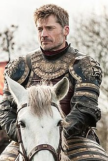

GAME OF THRONES
some information about got

Got is one the most famous tv show of all time.It includes various numbers of characters.Too many big stars worked in it over it all 8 seasons.many stars create their fan followings due to their roles in it
The story is very complicated ,there is only one throne and there are many claimers of it.
MAINS POINTS--
My favourite charcters of got
- Jaime lannister
- Denerys targerean
- khal drogo
- Tyrean lannister
- Cersie lannister
- Arya stark

click on the pic to know more about...

click on the pic to know more about...

click on the pic to know more about...

click on the pic to know more about...

click on the pic to know more about...

click on the pic to know more about...
music and theme songs used in it are truely amazing.every house had its own theme songs.These theme songs are used at very appropriate time which give very sensible tocuhes to the scenes. very talented musicians are hired to give give music for got.